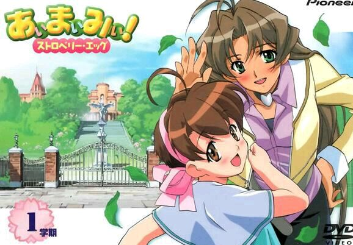

青春草莓蛋

《青春草莓蛋》（日语：あぃまぃみぃ！ストロベリー·エッグ）是由TNK原创制作的日本电视动画作品，于2001年7月4日至同年9月26日在WOWOW的‘Non＋Scramble’时段首播。全13话。
本作品是一部以热血教师加伪娘做题材的青春搞笑浪漫喜剧故事。它是原创动画作品，而后才有改编的漫画，发表在月刊Comic电击大王（MediaWorks）。
此电视动画集数标示名称并不是一般常见的“第1话，第2话”，而是“1限目，2限目”。
剧情简介
主角天和响是以立志成为体育老师为目标的青年，希望能够进入名校〈青鞜三之宫学院〉里任教。但该学院的院长却对于男性有着极大的偏见，并规定他们只雇用女老师，而不愿意雇用男老师。为了自己的目标与理想，响决定接受房东的帮助，变装成一位女性参加学校的甄试。没想到，他真的被学校给录取了，围绕着响和众多学生们的有趣校园生活就此展开。
推荐理由
暂无